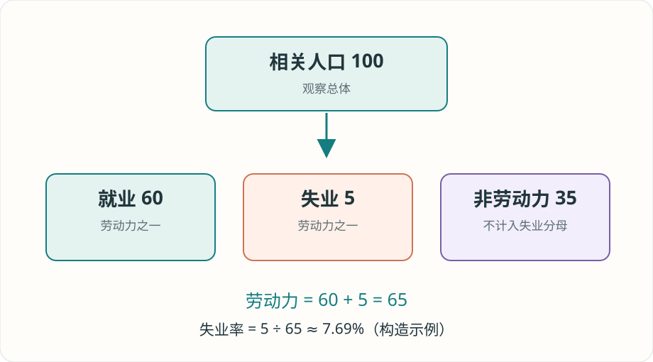
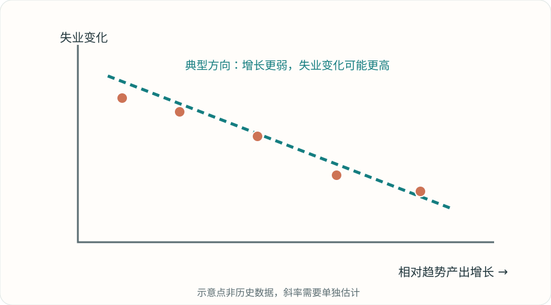

就业与失业
没有工作的人，并不都属于统计意义上的失业者。用人口分类、参与率和奥肯定律读懂劳动市场。
找不到工作，与不在劳动力市场是同一回事吗？
以美国 BLS 的家庭调查定义为例，人员通常被分为就业者、失业者、不在劳动力者。失业者需要满足无工作、能够工作并在相关参考期内积极求职等条件；主动停止寻找、全职在校且不求职的人不自动进入失业人口。不同国家对年龄、调查范围及求职要求的定义并不相同。

三个指标必须同时读
构造一个有 100 名相关人口的小经济：60 人就业、5 人失业、35 人未进入劳动力。其失业率是 5/65=7.69%，而不是 5/100=5%；劳动力参与率是 65/100=65%；就业人口比是 60%。
用人数更新三项劳动指标
三类人数为非负构造数据，不能与实际国家统计混同。
若一名失业者停止积极求职并退出劳动力，在就业人数不变时，失业率可能下降，但劳动力参与率也下降。因此失业率下降不一定表示更多人找到工作。
摩擦性、结构性、周期性失业
摩擦性失业来自求职与匹配过程的时间；结构性失业来自职业技能、地区或行业需求的不匹配；周期性失业来自总需求疲软与产出低于潜在水平。现实中的失业通常混合多种成因，分类是解释框架，不代表官方调查可以给每个人贴上唯一类别。
所谓自然失业率不是经济不可改变的永恒常数，其估计依赖劳动市场制度、人口结构、匹配效率与模型假设。
奥肯定律：经验关联不是计算命令
经济增长与失业率变化通常存在一定反向联系：生产增长更快时，企业可能增加用工。但产出可以通过劳动时间和生产率提高，劳动力参与也会变化，因而两者并非固定比例。

如何判断劳动市场是否真的改善
把失业率与参与率、就业人口比、职位空缺、工时、工资变化和不同年龄组的失业情况放在一起读。样本调查的就业与企业名册调查的岗位数也未必是同一个统计对象。一句「失业率下降」不能代替完整劳动市场诊断。
来源与延伸阅读
以下资料用于核对经济学定义与制度口径。文章中的数字化教学模型均非实际宏观统计。